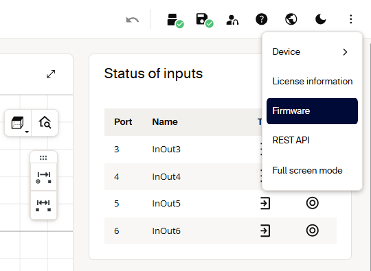
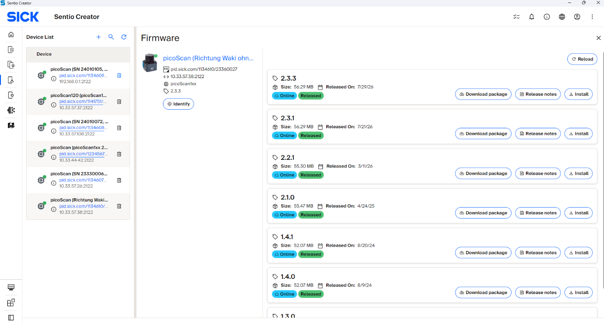

Firmware update¶
Firmware updates can be performed through three approaches. Choose the section that matches your workflow.
Web GUI¶
Open the device's firmware page in the web interface and follow the update workflow.

Sentio Creator¶
Use Sentio Creator to discover the device, select the firmware version, and install the update.

Where to get the package¶
Download the firmware package that matches your device variant and target firmware version from either:
The device's product page on SICK (Downloads / Software). Sentio Creator, a SICK tool that can also provide firmware packages.
Headless via the REST API¶
Automate the update without a graphical interface by following the five-step sequence below. Firmware updates run over HTTP, and the steps must be followed in order: skipping or reordering them can leave the device in an inconsistent state. After the flash, the device reboots automatically and is unreachable for a few minutes. The update counts as successful only once the device comes back online with the expected version.
1. Authenticate: obtain a session token. POST /api/CreateSessionToken at Service level. Store the token for the upload step.
POST /api/CreateSessionToken
Authorization: Basic <base64(Service:<password>)>
Content-Type: application/json
{}
The response contains the session token:
2. Upload the firmware package. PUT /api/update with the firmware file as the binary body. The X-Session-Token header authorizes this transfer, so Basic Auth is not required here.
PUT /api/update
X-Session-Token: <token>
Content-Type: application/octet-stream
<binary firmware file content>
A 200 OK confirms the package was received.
3. Trigger the flash. RunFirmwareUpdate is a protected method requiring challenge-response in the JSON body. Basic Auth and the session token are not accepted here, so fetch a fresh challenge immediately before calling it.
Fetch a fresh challenge and compute the hash for POST:RunFirmwareUpdate, then send it in the JSON body:
{
"header": {
"nonce": "...",
"opaque": "...",
"realm": "...",
"user": "Service",
"response": "<computed hash>"
}
}
4. Poll the update state. GET /api/UpdateState every ~5 s until it reaches Finished (2) or the device becomes unreachable (reboot started). Stop on Error (3) and investigate before retrying.
Example response:
5. Verify the new version. After the device is back online, read the identity and compare against the expected version:
Example response:
DeviceIdent.Version and GET /api/FirmwareVersion may format the same firmware version slightly differently, so normalize them before comparing.
UpdateState values¶
| Value | State | Meaning |
|---|---|---|
| 0 | Initial | No update in progress. Package may be uploaded but flashing hasn't started. |
| 1 | Started | Flashing in progress. Do not power-cycle the device. |
| 2 | Finished | Flash complete; the device reboots automatically. |
| 3 | Error | Update failed. Check package compatibility and retry. Do not power-cycle immediately. |
Error handling¶
| Symptom | Cause | Fix |
|---|---|---|
PUT /api/update returns 403 |
Missing/expired session token | Create a fresh token; add X-Session-Token |
RunFirmwareUpdate returns 401 |
Sent with Basic Auth / token instead of challenge-response, or stale nonce | Use a fresh challenge for POST:RunFirmwareUpdate |
UpdateState = 3 (Error) |
Wrong package for the variant, or an unsigned package on fw ≥ V2.2.0 | Download the correct .spk.signed; retry |
| Device never returns | Normal reboot can take 2-5 minutes | Wait; keep any UDP sockets open across the reboot |
While UpdateState is Started (1), never power-cycle the device. Allow 2-5 minutes total for the flash and reboot. Keep measurement sockets open across the reboot, so the OS doesn't buffer an ICMP port-unreachable message that would break the first recv() call afterwards (on Windows, apply SIO_UDP_CONNRESET).
Subscribe to the UpdateState WebSocket event instead of polling to get progress pushes during the flash. After the update, verify integrity with the LFTchecksum: a firmware change updates MD5LinuxRoot and MD5App but leaves MD5Parameters and MD5Calibration untouched.